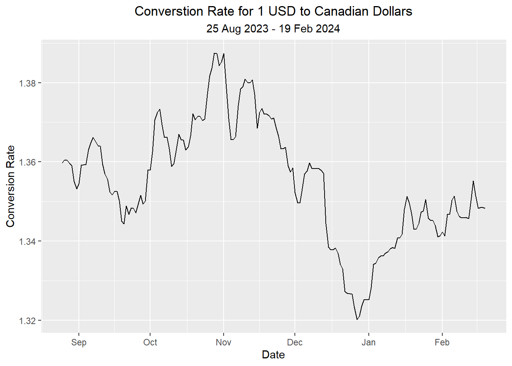

Show the code
code_goes_here <- 0TheInitialPromptGoesHere
Stuff
Stuff
Stuff
Text goes here.
Text goes here.
Text goes here.
Text goes here.
Text goes here.
This creates a callout box with no title
Solutions to Class Activity
tidyr::fill()
Stuff in first column
Stuff in second column
Stuff in first column
Stuff in second column
Stuff in third column
x <- c( 1, 2, 3, 4, 5 )y <- c( 1, 4, 9, 16, 25 )sample_df <- data.frame(
x = c(1, 2, 3, 4, 5, 6, 7, 8,
9, 10, 11, 12, 13, 14, 15, 16),
y = c(1, 4, 9, 16, 25, 36, 49, 64,
81, 100, 121, 144, 169, 196, 225, 256)
)
ts |>
autoplot(.vars = random) +
geom_line(data = ts, aes(x = index, y = a_t), color = "#D55E00", linewidth = 1) +
labs(
x = "Time",
y = "Random",
title = paste0("Random Component and EWMA (α = ", alpha, ")"),
subtitle = "(All Dates)"
) +
theme(
plot.title = element_text(hjust = 0.5),
plot.subtitle = element_text(hjust = 0.5)
)# Formatting dates
usd1_ts <- rio::import("data/exchange_rates.parquet") |>
filter(currency == "USD.CAD") |>
mutate(diff = rate - lag(rate)) |>
as_tsibble(index = date) |>
na.omit()
usd1_ts %>%
autoplot(.vars = rate) +
labs(
title = "Converstion Rate for 1 USD to Canadian Dollars",
subtitle =
paste0(
format(min(usd1_ts$date), "%d %b %Y"),
" - ",
format(max(usd1_ts$date), "%d %b %Y")
),
x = "Date",
y = "Conversion Rate",
) +
theme(
plot.title = element_text(hjust = 0.5),
plot.subtitle = element_text(hjust = 0.5)
)
\(x_{t-7} = 5\),\(~\) \(x_{t-6} = 10\),\(~\) \(x_{t-5} = 13\),\(~\) \(x_{t-4} = 8\),\(~\) \(x_{t-3} = 4\),\(~\) \(x_{t-2} = 3\),\(~\) \(x_{t-1} = 9\),\(~\) \(x_{t} = 2\)$ x_t = 8 $
Backward Shift Operator: \(\mathbf{B}\) Difference operator: \(\nabla\)